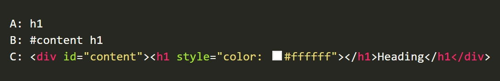

WHAT
IS
CSS
SPECIFICITY ?
คือ ค่าที่ใช้บอกลำดับความสำคัญใน style ว่าจะให้ browser ใช้ style ตัวไหนมาแสดงผลบนหน้าเว็บ โดยต้องมีการคำนวณค่าออกมา
HOW
TO
CALCULATE
SPECIFICITY ?
เริ่มต้นที่ 0 และจะเป็น 1000 สำหรับ style attribute เป็น 100 สำหรับแต่ละ ID เป็น 10 สำหรับแต่ละ attribute, class หรือ psudo-class และเป็น 1 สำหรับแต่ละ element name หรือ psudo-element
E
X
A
M
P
L
E

-ค่า specificity ของ A คือ 1 (one element)
-ค่า specificity ของ B คือ 101 (one ID และ one element)
-ค่า specificity ของ C คือ 1000 (inline styling)
เพราะว่า 1 < 101 < 1000 ทำให้ C มีค่า specificity มากที่สุด และจะถูกนำมา apply
REFERENCE : www.w3schools.com/css/css_specificity.asp